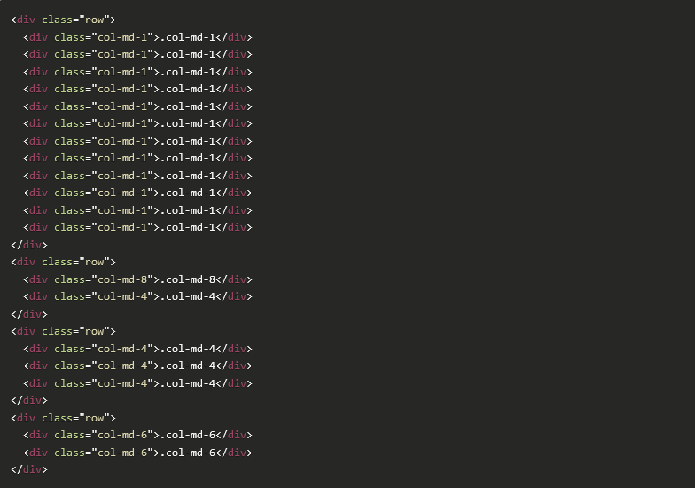

Perapol's Blog
RECENT POSTS
Grid with Bootstrap
Post by Admin, Feb 10, 2017.
Grid Bootstrap
จริงๆ แล้วถ้าให้พูดถึง Bootstrap ก็คงจะขาดเรื่องของ Layout หรือ Grid System ไปไม่ได้เลย ในความเป็นจริงเรื่องนี้ควรที่จะทำความเข้าใจก่อนใช้งาน Bootstrap เสียด้วยซ้ำ บทความนี้จะพูดถึงเรื่องของ Grid System และ Box model ของ CSS ด้วย ซึ่งจะทำให้ผู้อ่านเข้าใจ และ ปรับนำมาใช้กับงานได้อย่างง่ายขึ้น
Grid System คืออะไร ?
ถ้าพูดกันแบบบ้านๆ ทั่วไปเราก็คงจะบอกว่าเป็น Layout ที่คอยควบคุมวัตถุต่างๆ บนหน้าเว็บไซต์ให้แสดงผลได้อย่างถูกต้องตามหลัก box layout ซึ่งจะส่งผลดีต่อการเขียนหนึ่งหน้าเว็บไซต์ แต่สามารถใช้ร่วมกับอุปกรณ์ทุกขนาดหน้าจอ Grid system ของ Bootstrap เอง แบ่งออกเป็น 12 คอลัมน์ ถ้าให้เห็นภาพง่ายขึ้นก็น่าจะต้องบอกว่า เหมือนกับตาราง 1 แถว มี 12 คอลัมน์ประมาณนั้น ซึ่งหน่วยที่เป็น 12 นี้ เราสามารถเฉลี่ยแต่ละส่วนได้ตามความต้องการ ผู้อ่านน่าจะพอเห็นภาพกันบ้างแล้ว ซึ่งเวลาเขียนโค้ดนี้เอง เราจะต้องเริ่มต้นด้วย class ที่ชื่อว่า “row” และสร้าง element ภายในด้วย prefix class เริ่มต้นว่า “col-หน่วยหน้าจอ-เลขคอลัมน์” สิ่งที่เราต้องระบุเพิ่มเติมลงไปก็มี 2 ค่าด้วยกันคือ หน่วยหน้าจอ และ เลขคอลัมน์
การทำงานของระบบ Grid ใน Bootstrap 3 นั้นแสดงได้จากตารางต่อไปนี้
ตัวอย่าง: การกำหนด Grid
ตัวอย่างนี้ใช้ .col-md-* ซึ่งเป็นการแสดงผลในหน้าจอแบบเดสทอป โดยสามารถเปลี่ยนเป็นต่างๆ ได้ตามต้องการตามตารางด้านบน ซึ่งจะอยู่ภายใต้ .row
RECENT POSTS
Leave a Comment:
2 Comments:

Pack Feb 9, 2017, 2:30 AM
Thank you very much
Harry Feb 9, 2017, 8:25 PM
ขอบคุณมากเพื่อน